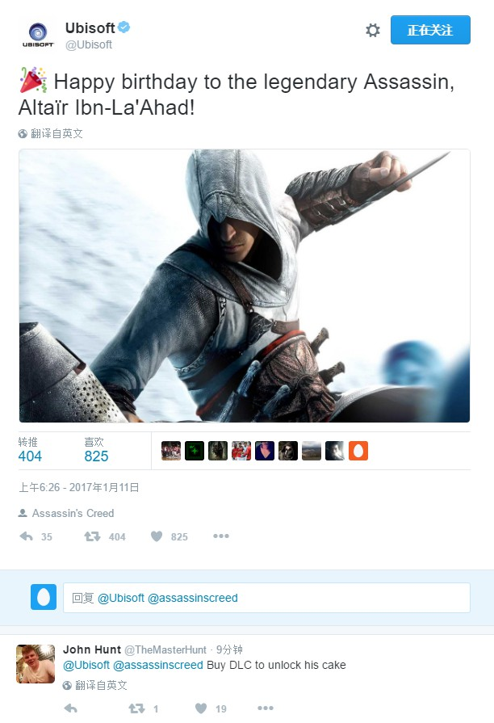

育碧发推庆祝阿泰尔生日 粉丝：购买DLC解锁蛋糕
2017-01-11 23:12:42 来源：游民星空[编译] 作者：Catcher 编辑：Catcher
1月11日正是《刺客信条》中传奇人物阿泰尔·伊本·拉阿哈德的生日，育碧官方推特今天也发文祝这位传奇人物生日快乐。不过随后便有粉丝在留言中调侃道：“只有购买DLC才能解锁生日蛋糕”。

虽然说到《刺客信条》系列的历史上最受欢迎的人物，可能大多数人都会选在系列游戏中留下了浓墨重彩一笔的艾吉奥，但《刺客信条》中一切的开始则全都要归功于这位传奇刺客，阿泰尔·伊本·拉阿哈德，他在24岁时便获得刺客大师的头衔，尽其一生都在为了刺客组织的使命和未来而奋斗，终年92岁。
《刺客信条》的确能够算得上是21世纪以来最受玩家欢迎的游戏系列之一，将戴着兜帽和袖箭跑酷的刺客形象烙在了每一个粉丝心里。而此前育碧也称会摒弃此前饱受粉丝诟病的一年一作的惯例，希望今后能为广大粉丝们带来更优秀的作品。
上一篇： 武器大师打造《刺客信条》阿泰尔之剑 最强武器削铁如泥
下一篇：《刺客信条》艾吉奥典藏版泄露 又一个合集？